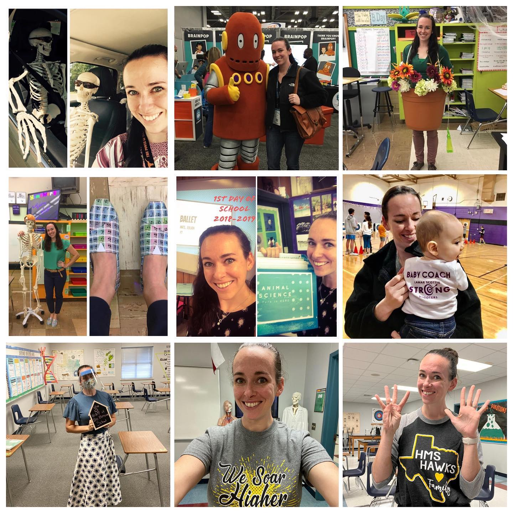
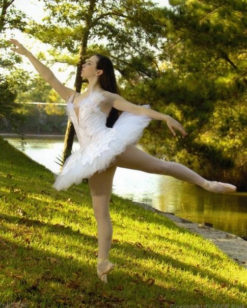

Teacher.
I have taught middle school science and dance for the past 9 years. I
was around for the transition from pen and paper to shared devices,
and then from shared devices to students learning in a 1-1 device
ratio. I was then quickly tasked to create an online curriculum due to
the pandemic and closure of in-person education. During this time, I
learned how to transition the typical hands on lab investigations into
a virtual field. I also managed to produce a beautiful dance performs
through the powers of zoom and video recording.
Now the challenge, back in the classroom, is to determine the value of physical assignments versus digital assignments. I am determining what curriculum from the pandemic is worth keeping and determining what curriculum is better learned the "old fashioned" way, with pen and paper.
Now the challenge, back in the classroom, is to determine the value of physical assignments versus digital assignments. I am determining what curriculum from the pandemic is worth keeping and determining what curriculum is better learned the "old fashioned" way, with pen and paper.
Athlete.
After dancing, I attended the University of Texas at Austin, where I
walked onto the Women's Rowing Team. During my novice year, the Big
XII conference held its inagural Big XII Rowing Championship where I
help secure a victory in the 1st Novice 8. I was voted the Most
Valuable Rower by ny novice squad. I then advanced to the Varsity
squad where I rowed in the Varsity 4. During my time on Varsity, I won
another Big XII Championship, as well as a Conference USA
Championship.
After college and a round of watching the winter Olympics on TV, I decided to try out of the USA Skeleton team. I trained back at The University of Texas and attended the combine. While I did not recieve an invitation to move on, I like to share this story because to this day, I still have yet to try the sport of Skeleton. You see, you have to try out for the team before ever actually doing the sport.
After college and a round of watching the winter Olympics on TV, I decided to try out of the USA Skeleton team. I trained back at The University of Texas and attended the combine. While I did not recieve an invitation to move on, I like to share this story because to this day, I still have yet to try the sport of Skeleton. You see, you have to try out for the team before ever actually doing the sport.
Artist.
I am a former ballerina and danced with Pittsburgh Ballet Theatre in
their Graduate Program. Prior to Pittsburgh, I danced in the
pre-professional ballet company, Kingwood Dance Theatre. During my
time dancing, I had the opportunity to tour through Austria and
Germany with the Young! Tanzsommer program. I also studied with
Houston Ballet, Boston Ballet, and The Joffrey Ballet during their
summer intensives.
Student.
I am currently studying to be a front-end developer through the
SheCodes program. I have the basics of html, js, and css down and look
forward to learning new things and creating projects that I am proud
of.

